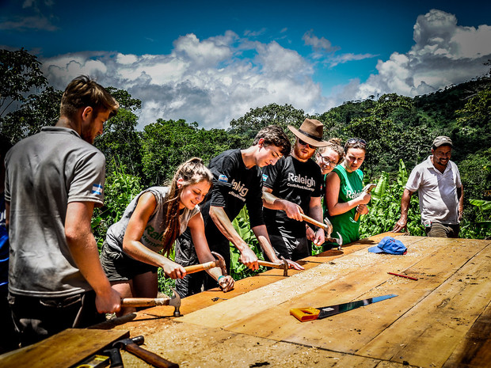

Option 1

One option I've explored is becoming a stock broker for a large corporation in hopes of one day running my own. I've always had a huge interest in the stock market, how it worked, how it sometimes didn't work, how it impacted peoples lives, etc. If I did end up deciding to follow that path, I would love to live in a big city such as NYC or Denver, both of which I've visited many times.
Options 2
The second option I've widely explored, is working for a non profit when I graduate. I would love to work as the financial advisor for a non-profit program that is trying to help rebuild a third world country; I would tell them the budget they had and where it should be spent. This is option 2 mainly because of the cost. Working for a non-profit means just what it says: no profit. After graduating I will have a little student debt and hopefully will have a home and responsibilities and that isn't free by any means. I will still keep this as a possibility, but I also will need to think logically.